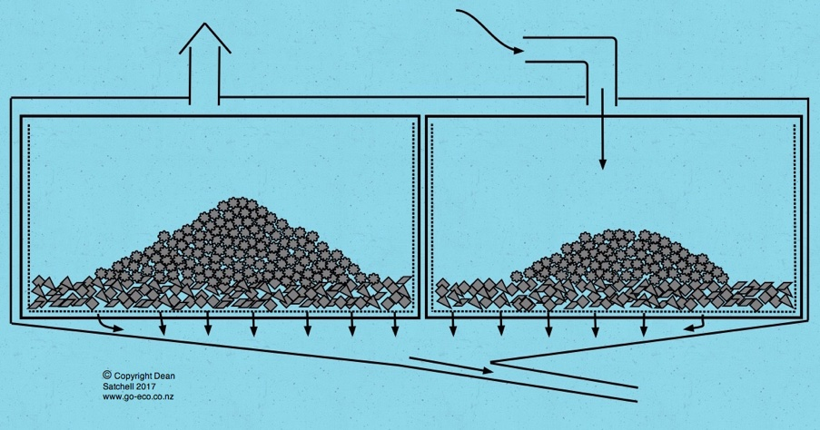
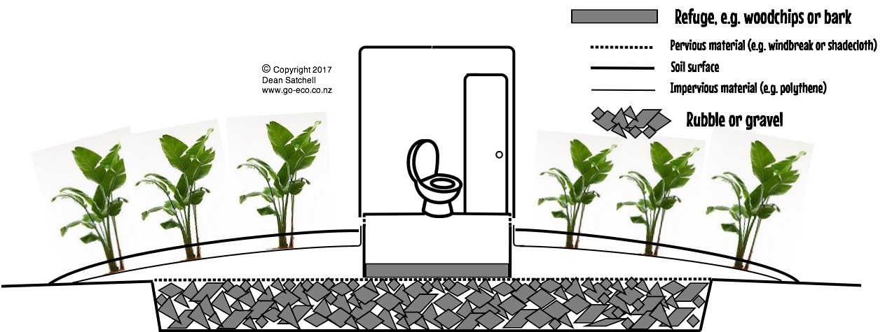

Constructed
twin chamber primary vermifilter (vermicomposting digester). Treatment
is aerobic.
This digester is fed by a flush toilet in the house.

Twin
chambers offer hygenic and simple removal of vermicomposted humus after
a
resting period
(usually alternating every 5 years). Primary treated effluent is either
disposed of in underground
soakage
trenches or alternatively surface irrigated after undergoing secondary
treatment.

An
"out-house" vermicomposting digester for low flush toilets. This simple
low cost design offers percolation
of liquids into soil and decomposition of solid waste in a simple
chamber (such as an inverted concrete cattle
trough). Soil dug out from the soakage pit is replaced to make the
mound after filling the pit with rubble.
Note the solid waste chamber has ventilation for an aerobic digestion
environment. The refuge substrate
is above the surrounding ground level, so if the water table ever rose
to the ground surface the worms
remain safe from drowning. The polythene layer ensures rain drains away
from the soakage site underneath,
to ensure good soakage of effluent into surrounding soil. Plants are planted through the polythene layer for
transpiration of water and improved aeration of the medium.